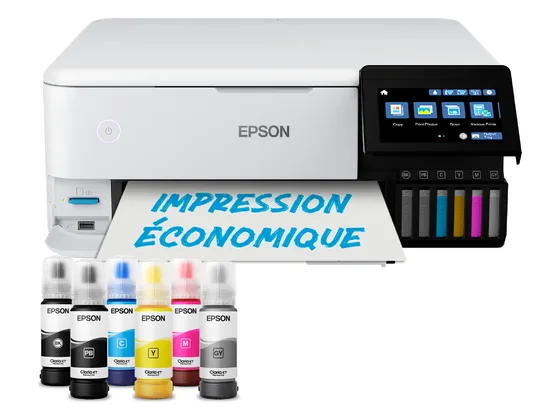
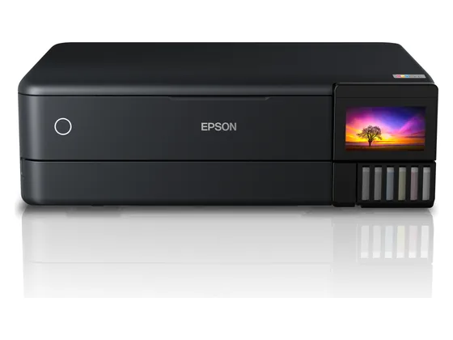
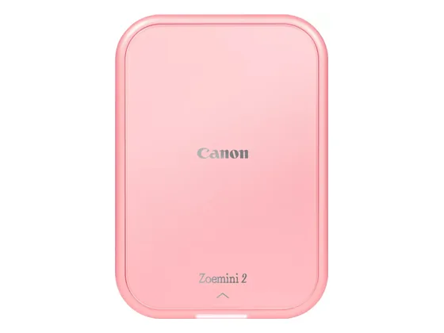

Canon Selphy CP1500 : avis, tests et prix
Le verdict en une phrase. La référence des tirages 10 × 15 à la maison : sublimation thermique, photos plastifiées qui durent, coût par tirage parmi les plus bas des petites imprimantes.
Notre choix dans le top 10 Imprimantes photo.

Pour qui ?
Vous voulez imprimer vos photos de vacances en 10 × 15 de qualité labo, chez vous.
Vous voulez aussi imprimer des documents.
Le consensus de la presse
Sur 4 notes, 2 atteignent ou dépassent 8/10. La plus haute : 9,5/10 (PC Magazin) ; la plus basse : 6,0/10 (Frandroid).
Où l'acheter
La configuration peut différer d'un marchand à l'autre : vérifiez la fiche avant d'acheter. Le prix Electro Dépôt est celui de son flux produits officiel à la date indiquée ; seul le prix affiché par le marchand fait foi. Seuls les liens Amazon et Electro Dépôt sont affiliés à ce jour ; les autres sont de simples liens directs. Aucun n'influence les notes ni le classement.
Tous les tests recensés
Chaque ligne renvoie vers le test d'origine. Les notes sont converties sur 10 ; « test » signale un article sans note chiffrée. Notre méthode.
- PC Magazin9,5
- Creative Bloq8,0
- Trusted Reviews7,0
- Frandroid6,0
Les alternatives pour le même usage
Tout le top 10 →
Epson EcoTank Photo ET-8500La version A4 de l'ET-8550 : 6 encres pour des photos très réussies et un coût par tirage minimal, saluée par Les Numériques. N° 3 · La photo A3+
Epson EcoTank Photo ET-8550Une imprimante photo à réservoirs à 6 encres qui imprime jusqu'à l'A3+ sans marge, pour un coût par tirage dérisoire. Chère à l'achat. N° 4 · La sticker
Canon Zoemini 2Une imprimante de poche sans encre (papier Zink) qui sort des photos autocollantes en quelques secondes : parfaite pour décorer, moins pour la qualité.Questions fréquentes
Que pense la presse de l'imprimante Canon Selphy CP1500 ?
La note presse moyenne est de 7,6/10, calculée sur 4 notes (de 6,0 à 9,5/10). La référence des tirages 10 × 15 à la maison : sublimation thermique, photos plastifiées qui durent, coût par tirage parmi les plus bas des petites imprimantes.
Quels sont les points faibles relevés par les tests ?
Batterie en option ; Application perfectible.
À qui s'adresse le modèle Canon Selphy CP1500 ?
Vous voulez imprimer vos photos de vacances en 10 × 15 de qualité labo, chez vous. À éviter si : vous voulez aussi imprimer des documents.
Où l'acheter, et à quel prix ?
Comptez environ 120 € (prix indicatif constaté en octobre 2026). Nous l'avons trouvé en vente chez Electro Dépôt et Amazon. Les prix changent vite et la configuration peut différer d'un marchand à l'autre : seul le prix affiché par le marchand fait foi.